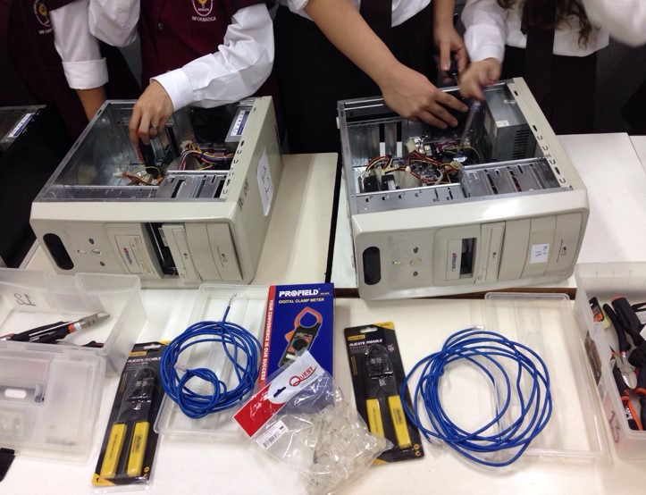
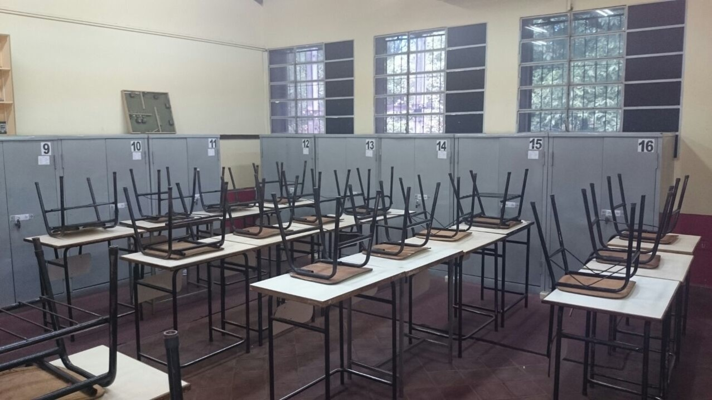
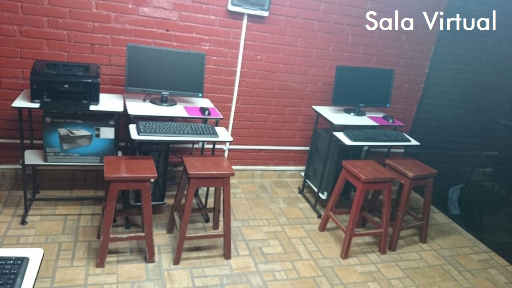

Informática
____________________________________________________

- 
- 
- 
La informática tiene como objetivo cubrir la necesidad de información actualizada y oportuna que requiere la administración de las empresas, haciendo más eficientes sus labores lo que la lleva a ser más competitiva y a alcanzar los niveles que un mundo globalizado demanda.
PERFIL GENERAL
- El perfil profesional del Bachillerato Técnico en Informática pretende una sólida formación técnica, ética y humanística que le permita proyectar las competencias para incorporar y desarrollar programas informáticos, instalar (hardware y software), asistencia técnica, aplicación del pensamiento crítico y el método científico en los problemas propios de la especialidad, adecuándose a las exigencias de los cambios tecnológicos del mundo globalizado y acordes a las exigencias de la región.
PERFIL ESPECÍFICO
Al término de los cursos de formación del Bachillerato Técnico en Informática, se concibe un Técnico en Informática de Nivel Medio quien será capaz de:
- Emplear conocimientos científicos, humanísticos y tecnológicos para la práctica laboral de su especialidad y-o prosecución de estudios superiores.
Por consiguiente:
a. Planificar en base a un modelo, organizar, conducir y controlar trabajos en el área de su competencia.
b. Analizar y proponer soluciones a problemas informáticos acordes a su nivel de preparación.
c. Adaptarse a los cambios tecnológicos de su especialidad. - Aplicar con calidad los conocimientos tecnológicos e informáticos adquiridos en la ejecución de trabajos.
Por consiguiente:
a. Utilizar el pensamiento crítico, el método tecnológico y científico para el estudio y resolución de problemas.
b. Elaborar presupuestos de los proyectos y-o trabajos que le son encomendados bajo la supervisión de instancias superiores.
c. Utilizar eficientemente los recursos del hardware, software, y la literatura técnica correspondiente en formato impreso y digital. - Aplicar habilidades y destrezas para el uso y desarrollo de aplicaciones informáticas.
Por consiguiente:
a. Manejar con solvencia software de aplicaciones generales.
b. Desarrollar programas de aplicación de pequeño porte utilizando paradigmas de programación actual.
c. Implementar capacidades emprendedoras para desarrollar proyectos, producir trabajos originales o resolver problemas. - Desarrollar destrezas generales para el uso y mantenimiento de equipos informáticos.
Por consiguiente:
a. Instalar y configurar sistemas informáticos básicos (hardware y software).
b. Realizar asistencia técnica de equipos, insumos, productos y servicios informáticos básicos.
c. Asistir para la compra-venta de equipos informáticos básicos.
d. Utilizar con eficiencia equipos, procedimientos y técnicas habituales en la ejecución de trabajos de instalación y mantenimiento.
e. Montar, instalar y configurar una red de pequeña o mediana empresa. - Aplicar el pensamiento crítico y la ética en el manejo de informaciones y en el desempeño de sus funciones.
Por consiguiente:
a. Aplicar los procesos del pensamiento crítico en la elaboración de trabajos.
b. Comunicar información e ideas a múltiples audiencias, usando con solvencia una variedad de medios y de formatos.
c. Promover y practicar el uso seguro, legal y responsable de la información.
d. Demostrar actitud positiva frente al uso de las TIC´S como medio de comunicación interpersonal y grupal para apoyar la colaboración, el aprendizaje y la productividad.
e. Actuar con ética y responsabilidad en el manejo de equipos de terceros, instalación de software legal, calidad y veracidad de los componentes a instalar, así como el manejo eficiente de los tiempos para la realización de los trabajos encomendados.
PERFIL OCUPACIONAL
El campo ocupacional específico del técnico se define por su participación bajo supervisión o de manera independiente según requerimientos de terceros en: El desempeño eficiente y eficaz en empresas de servicios públicos y/o privados para:
- Planificar la implementación de software de gestión de datos (informatización de empresa) siguiendo el relevamiento de datos.
- Por consiguiente:
a. Identificar las necesidades de los usuarios.
b. Diseñar las recomendaciones técnicas a medida acordes a su nivel.
c. Recomendar (Sugerir-Diagnosticar) soluciones técnicas acordes a su nivel)
d. Programar e implementar software de gestión de datos para medianas empresas.
e. Elaborar documentaciones técnicas y planificar procesos de instalación y actualización de software. - Administrar recursos informáticos básicos.
- Por consiguiente:
a. Coordinar y gestionar recursos informáticos básicos (hardware y software).
b. Controlar y evaluar el uso de los recursos informáticos básicos.
c. Asesorar técnicamente en el mantenimiento y la compra-venta de equipos e insumos informáticos básicos a terceros. - Extensión profesional.
- Por consiguiente:
a. Capacitar al personal para operar equipos y dispositivos tecnológicos-informáticos.
b. Capacitar y-o ejercer la tutoría del personal para operar software de aplicaciones generales.